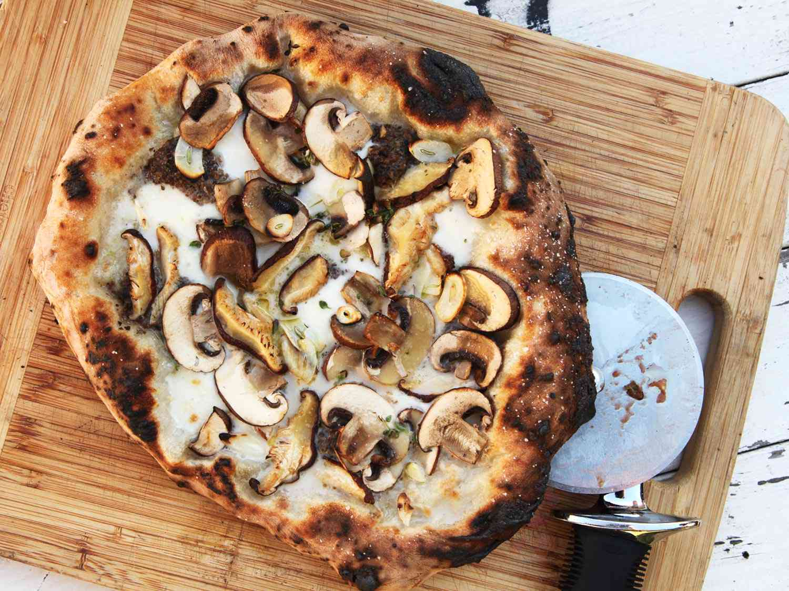

Pizza

Here's the recipe of the legendary best pizza. Who doesn't like a good pizza? Here's the way to do it by yourself!
You don't need a lot of ingredients. To cook it? Easy! Just open the oven.
Ingredients
- cooking spray
- 4 large portobello mushroom cups
- 3 tablespoons extra-virgin olive oil
- 1 pinch salt and ground black pepper to taste
- 2 cups sliced fresh mozzarella cheese, divided
- 1/2 cup sliced cherry tomatoes
- 1/2 cup chopped fresh basil
- Preheat oven to 375 degrees F (190 degrees C). Line a baking sheet with aluminum foil and spray foil with cooking spray.
- Arrange mushrooms, top-side down, on the baking sheet. Drizzle olive oil over mushrooms and season with salt and pepper. Layer 3/4 of the mozzarella cheese onto mushrooms and top with tomatoes and basil. Cover the top with remaining cheese.
- Bake in the preheated oven until mushrooms are tender and cheese is melted, 20 to 25 minutes.